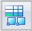
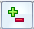

Block tables
Creating tables from blocks
You can create a block table from all of the blocks on a drawing sheet or in a drawing view, or from just the blocks that you select, using the Home tab → Tables group → Block Table command

.
You can produce a ballooned block table similar to a parts list by selecting the Auto-Balloon button on the Block Table command bar.
Before you place the block table on the drawing sheet, you can use the Block Table Properties dialog box to:
-
Choose how you want the blocks to be listed in the block table using the Options tab.
-
Add columns that show block label properties using the Columns tab.
-
Create table titles using the Title tab.
Modifying the content and format of a block table
You also can change the formatting of a table after you place it on the sheet. For example, you can edit table cells directly to add boldface, italics, and underline to column headings. You can edit the text in a cell, for example to update a table title or subheading.
You also can create an independent column header style.
To learn how you can change the appearance of individual elements of a table—titles, columns, headers, and data cells—without changing the table style, see the following Help topics:
Understanding item numbers in block lists
Item numbers are assigned automatically when the block table is created, and they are reported in the Item Number column in the block table. The manner in which item numbers are assigned is based on the list type (block list or block view list), and the way block occurrences and nested blocks are treated during list generation.
An item number in the block list that is marked by an asterisk indicates that no balloon was created automatically for it on the drawing. Items without balloons are controlled by options in the Block Table Properties dialog box:
-
On the Options tab, you can select the Mark Un-ballooned Items check box and specify one or more characters to display after the item number in the block list.
Example:You can change the default single asterisk marker (*) to a double asterisk (**).
-
On the Balloon tab, you can use the Auto-Balloon options to control how many (or how few) duplicate balloons are created.
An item number balloon that displays NA represents a block that has been deleted.
Deleting blocks and renumbering block lists
When you use the Add/Remove blocks option

to remove block geometry, or when you delete a block from a sheet using the Delete key, the table row that lists the block is also deleted. You can prevent the row from being removed from the table by selecting the option, Convert deleted block to user defined row, which is located on the Options tab. A user-defined row is displayed as a blank row on the sheet and on the Item Number tab.When you delete blocks and then update the block table, the block list is not automatically renumbered. For example, if you delete the block assigned item number 1, the block list skips that number.
You can renumber a parts list using the Sorting tab and the Options tab in the Block Table Properties dialog box. If you used automatic ballooning when you created the block list, renumbering the list also renumbers the balloons.
Removing auto-balloons for deleted blocks
When a block is deleted, its auto-balloon is not. You can use the Tools tab→Assistants group→Track Dimension Changes command to locate stranded item balloons for blocks that are deleted from the drawing. The Dimension Tracker dialog box identifies the the balloons with the reason code, Detached from Block Table. You can then use the Clear All option to remove them from the drawing.
For more information, see Review changed dimensions and annotations.
Saving the block table format
You can save a block table format with a name you define, so you can easily use it again. Use the Saved Settings option on the General tab in the Block Table Properties dialog box to name, save, and reapply your parts list format.
A quick way to reapply the table formatting is to use the Saved Settings list  on the Block Table command bar.
on the Block Table command bar.
Copying block table contents
You can use the commands on the shortcut menu of a selected block table to copy the contents of the block table.
-
You can use the Copy Contents command to copy the block table contents as text. You can then select the Paste command to paste the text into another application, such as Excel or a Word document. This method does not retain the table structure.
For more information, see Copy a parts list to the clipboard.
-
You can use the Convert To Table command on the table shortcut menu to convert a block table to a user-defined table format. This retains the block table contents and appearance (the table grid lines, column headings, table titles, and other display features of the original block table), but it removes the associativity between the block table and the source blocks used to create it.
For more information, see Convert a parts list to a table.
Updating a block table
You can use the Update command on the block table shortcut menu to update the contents of a block table after adding or removing blocks from the set of blocks used to create the table. For example, if you created a block table initially based on the contents of a 2D view, but you subsequently deleted a block from the view, you can use the Update command to remove any references to the deleted block from the table.
You can use the Convert deleted blocks into user defined rows option on the Options tab in the Block Properties dialog box to preserve the block information in the table, even when the block itself is deleted and the table is updated. User-defined rows can be edited or removed from the table using the Item Numbers tab.
Creating a custom table style
You can use the Style command to create your own, fully customized Table styles for block lists and block view lists in block tables. For example, you can define line color for the table border, grid, and heading dividers. You can change the text formatting of the column headers, for example, to apply boldface, italics, or underline, by creating an independent column header style. See the help topic, Manipulate table rows and columns, to learn how to do this.
When you place a block table on the drawing, you can select a custom table style using the Table Style list on the Block Table command bar.
For more information, see these Help topics: